Chapter 1: Quantum Foundations¶
This chapter builds the intuition and the gentle maths you need before touching a real quantum computer. It explains why classical machines hit a wall on some problems, how qubits differ from bits, and the core ideas of superposition, measurement, the Bloch sphere, interference, entanglement, no-cloning and unitarity. It ends with an honest look at what quantum computers can and cannot do, the milestones from Feynman to Helios, and a map of the full quantum stack.
1.1 Why Quantum Computing? The Limits of Classical Machines¶
Ordinary computers store information as bits that are either 0 or 1, and they handle almost every everyday task brilliantly. But a few important problems — such as exactly simulating molecules or factoring very large numbers — grow so quickly with size that no classical computer could ever finish them. A quantum computer stores information in qubits that obey quantum physics, which lets specially designed algorithms take shortcuts classical machines cannot.
Think of it like…
Describing a symphony by writing down every possible combination of notes would fill every library on Earth, yet an orchestra simply plays it. Feynman's insight was that to model nature's quantum 'orchestra', you should build an instrument that plays by the same rules.
Real-world example
Amara, a chemistry student at the fictional Northbridge University, wants the exact quantum state of a molecule modelled with 50 qubits. Stored classically that is 2^50 ≈ 1.1 × 10^15 complex numbers — about 18 petabytes at 16 bytes each. In 2025 Europe's JUPITER exascale supercomputer needed over 16,000 GPU superchips to simulate a 50-qubit machine. At 100 qubits no classical memory could hold the state, while a 100-qubit quantum computer holds it naturally.
How it works¶
- For decades classical chips sped up by shrinking transistors (Moore's law), but clock speeds stalled around 2005 and features now approach atomic sizes.
- Some problems scale exponentially: every extra particle in a quantum system doubles the numbers needed to describe it.
- In 1981 Richard Feynman argued that nature is quantum, so simulating it efficiently needs a computer that is itself quantum.
- In 1985 David Deutsch defined a universal quantum computer; in 1994 Peter Shor showed one could factor large numbers exponentially faster than any known classical method.
- Today's machines are still noisy and used mainly for research; the goal is fault-tolerant computers that run such algorithms reliably.
Who uses it
Physicists, chemists, cryptographers, software engineers, investors and policymakers all need this 'why' to judge where quantum computing genuinely matters.
Key takeaway
Interview one-liner: quantum computers are not faster at everything — they give large speed-ups only for problems with special structure, such as simulating quantum systems and factoring.
Going deeper
- Dennard scaling broke down around 2005-2006, so single-core clock speeds plateaued near 3-5 GHz; since then gains come from more cores, GPUs, specialised accelerators and better software rather than raw speed.
- Exact simulation of n qubits needs 2^n complex amplitudes; at 16 bytes each, 30 qubits fit in a 16 GiB laptop but 50 qubits need about 18 petabytes uncompressed.
- In November 2025 Jülich Supercomputing Centre and NVIDIA fully simulated a 50-qubit universal quantum computer on JUPITER, using more than 16,000 GH200 superchips and compression to fit in about 2 PB.
- Feynman's talk 'Simulating Physics with Computers' was given in 1981 and published in 1982; Yuri Manin made a similar suggestion in 1980, and Paul Benioff had modelled a quantum Turing machine the same year.
- Clever classical methods — tensor networks, quantum Monte Carlo, density-functional theory — often avoid the exponential cost, so any claimed quantum advantage must beat the best classical method, not brute force.
- Factoring a 2048-bit RSA modulus with the best classical algorithm (the general number field sieve) is estimated to take far longer than the age of the universe on today's hardware.
Common mistakes & misconceptions
- Believing quantum computers will replace laptops: they are specialised co-processors used alongside classical computers for particular problems.
- Assuming exponential state size means exponential speed for every task: speed-ups need algorithms that exploit interference, and most tasks gain nothing.
- Comparing against naive brute-force simulation: real claims must beat the best known classical algorithms, which keep improving.
Try it: Why classical simulation hits a wall: memory for a full n-qubit state (Python)¶
for n in (10, 20, 30, 40, 50, 100):
nbytes = 16 * 2**n # complex128 = 16 bytes per amplitude
print(f"{n:>3} qubits -> {nbytes:.2e} bytes")
# 30 qubits ~ 1.7e10 B (16 GiB laptop), 50 qubits ~ 1.8e16 B (18 PB)
Key concepts, algorithms, hardware, tools & milestones¶
| Name | What it does | Example |
|---|---|---|
| Moore's law Gordon Moore, 1965 (revised 1975) · Concept · Legacy · Beginner |
Observation that transistor counts on chips roughly double every two years; the pace has slowed as features approach atomic scale. | Intel's 4004 (1971) had 2,300 transistors; NVIDIA's Blackwell GPU (2024) has about 208 billion — yet each transistor cannot shrink forever. |
| End of Dennard scaling Robert Dennard et al., 1974; breakdown c. 2005 · Concept · Current · Intermediate |
Smaller transistors stopped delivering proportionally lower power, so clock frequencies stalled and chips went multi-core instead. | A 2005 desktop CPU ran near 3.8 GHz; most 2026 desktop CPUs still boost only to about 5-6 GHz, adding cores instead. |
| Exponential state space Quantum mechanics · Math · Beginner |
An n-qubit system is described by 2^n complex amplitudes, so each extra qubit doubles the information needed to describe it. | 3 qubits need 8 amplitudes; 300 qubits need 2^300 — more numbers than atoms in the observable universe (about 10^80). |
| Feynman's quantum simulator idea Richard Feynman, MIT conference 1981 (published 1982) · Milestone · Legacy · Beginner |
Proposal that only a computer built from quantum parts can efficiently simulate quantum physics. | Feynman noted that simulating R particles classically needs resources growing exponentially in R, but a quantum system simulates another naturally. |
| Benioff and Manin (1980) Paul Benioff; Yuri Manin · Milestone · Legacy · Intermediate |
Benioff described a quantum-mechanical model of a Turing machine; Manin suggested quantum automata could simulate physics efficiently. | Historians often cite 1980-1982 as the birth of quantum computing, with Benioff, Manin and Feynman working independently. |
| Quantum simulation Feynman's original motivation · Concept · Current · Beginner |
Using controllable qubits to mimic another quantum system, such as molecules or magnetic materials, to predict its behaviour. | A battery lab could one day simulate lithium-ion reaction pathways directly instead of approximating electron interactions classically. |
| Integer factorisation hardness Number theory; RSA (1977) · Concept · Current · Beginner |
No known classical algorithm factors large numbers efficiently; the best, the general number field sieve, still takes super-polynomial time. | RSA-250 (829 bits) was factored in 2020 using about 2,700 CPU core-years; RSA-2048 remains far beyond classical reach. |
| Types of quantum speed-up Complexity theory · Concept · Intermediate |
Speed-ups range from exponential (Shor's factoring) to quadratic (Grover's search) to none; most everyday tasks fall in the last group. | Grover turns 10^12 unstructured guesses into about 10^6 queries; Shor turns an intractable factoring task into a polynomial-time one. |
| Classical simulation methods Tensor networks, Monte Carlo, DFT · Tool · Current · Intermediate |
Smart classical techniques that exploit structure, such as limited entanglement, to simulate some quantum systems far beyond brute force. | In 2022 researchers used tensor-network contraction on GPUs to reproduce Google's 2019 Sycamore sampling task in hours, not millennia. |
| Statevector simulation record Jülich Supercomputing Centre and NVIDIA, Nov 2025 · Milestone · Current · Intermediate |
Full simulation of a 50-qubit universal quantum computer on the JUPITER exascale system, beating the previous 48-qubit record. | The JUQCS-50 simulator ran on more than 16,000 GH200 superchips, using compression to cut memory about eightfold. |
| QPU (quantum processing unit) Industry term · Concept · Current · Beginner |
The quantum chip or system that runs quantum circuits, controlled by and working alongside classical CPUs and GPUs. | A data scientist's Python program sends a circuit to a cloud QPU, receives 4,000 measurement results, then post-processes them on a laptop. |
| NISQ era John Preskill, 2018 · Concept · Current · Beginner |
Noisy Intermediate-Scale Quantum: today's tens-to-hundreds-of-qubit machines without full error correction, limited by noise. | A 156-qubit processor with about 0.3% two-qubit error can run only a few thousand gates before noise swamps the answer. |
| Fault-tolerant quantum computing (FTQC) Shor 1995-96; threshold theorem · Concept · Emerging · Beginner |
The goal of using error correction so long computations run reliably despite imperfect physical qubits; detailed in the error-correction chapter. | Running Shor's algorithm on RSA-2048 needs millions of reliable operations — impossible without fault tolerance. |
1.2 Classical Bits vs Qubits¶
A classical bit is a switch that is definitely 0 or definitely 1. A qubit can be in a blend of 0 and 1 at the same time, described by two numbers called amplitudes, and it only gives a definite 0 or 1 when you measure it. Qubits can also be linked (entangled) so that their joint state cannot be described one qubit at a time.
Bit vs qubit
| Classical bit | Qubit | |
|---|---|---|
| States | 0 or 1 | α|0⟩ + β|1⟩ |
| Described by | 1 binary value | 2 complex amplitudes |
| Reading it | Does not change it | Collapses it |
| Copying | Easy | Impossible (no-cloning) |
| n of them | One of 2^n values | 2^n amplitudes |
| Typical lifetime | Years (flash, disk) | µs to seconds |
| Error rate | ~10^-17 or less | ~10^-3 per 2-qubit gate |
A qubit's state is richer than a bit's, but measurement still yields one bit.
Think of it like…
A bit is a coin lying flat — heads or tails. A qubit is a coin spinning on the table: it has a definite 'spin state' that sets the odds, but you only get heads or tails when you slap your hand down, and slapping it stops the spin.
Real-world example
Kofi stores the number 5 in three classical bits as 101 — one value at a time. With three qubits he can prepare a state containing all eight values 000 to 111, each with an amplitude. But when he measures, he gets just one 3-bit answer, chosen at random according to those amplitudes, so a useful algorithm must arrange for the right answer to be likely.
How it works¶
- A classical bit is in state 0 or 1; n bits hold exactly one of 2^n values at a time.
- A qubit's state is |ψ⟩ = α|0⟩ + β|1⟩, where α and β are complex amplitudes with |α|² + |β|² = 1.
- Gates change the amplitudes smoothly (rotations), unlike classical gates that flip between discrete values.
- Measuring the qubit returns 0 with probability |α|² or 1 with probability |β|², and the state collapses to the result.
- n qubits together are described by 2^n amplitudes, and entangled states cannot be split into separate single-qubit descriptions.
Who uses it
Everyone starting quantum computing — students, software developers moving from classical programming, and technical managers — needs this comparison first.
Key takeaway
Memorise: a qubit holds 2 complex amplitudes but yields only 1 classical bit when measured (Holevo's bound) — superposition is not free storage.
Going deeper
- Physically a qubit is any two-level quantum system: two energy levels of a superconducting circuit, two hyperfine levels of an ion or atom, two polarisations of a photon, or spin up/down of an electron.
- Because the global phase of a state is unobservable and amplitudes are normalised, a single qubit's pure state has two real degrees of freedom, drawn as a point on the Bloch sphere.
- Holevo's theorem (1973) proves n qubits can transmit at most n classical bits of information, so qubits are not a way to store exponentially more readable data.
- Classical bits in DRAM or flash keep their value for milliseconds to years; superconducting qubits keep coherence for roughly 100-300 µs, and trapped-ion qubits for seconds or longer.
- A qudit generalises the qubit to d levels (qutrits have d = 3); some hardware such as trapped ions and superconducting transmons can use higher levels, but most software assumes qubits.
- Two-qubit gate errors on the best 2025-2026 machines are around 10^-3 (99.9% fidelity), billions of times worse than classical logic, which is why error correction matters.
Common mistakes & misconceptions
- Saying a qubit 'is both 0 and 1': it is in one definite state that gives probabilistic outcomes; 'both at once' is a loose metaphor.
- Thinking n qubits store 2^n readable values: measurement returns only n bits, as Holevo's bound proves.
- Treating amplitudes as probabilities: amplitudes are complex and can cancel; probabilities are their squared magnitudes.
Try it: A qubit in equal superposition, sampled 1,000 times (Qiskit 2.x)¶
from qiskit import QuantumCircuit
from qiskit.quantum_info import Statevector
qc = QuantumCircuit(1)
qc.h(0) # |0> -> (|0> + |1>)/sqrt(2)
sv = Statevector(qc)
print(sv) # amplitudes [0.707+0j, 0.707+0j]
print(sv.sample_counts(1000)) # roughly {'0': 500, '1': 500}
Key concepts, algorithms, hardware, tools & milestones¶
| Name | What it does | Example |
|---|---|---|
| Bit Claude Shannon, 1948 · Concept · Current · Beginner |
The basic unit of classical information: a single 0 or 1, stored as voltage, charge or magnetisation. | The letter 'A' is stored as 8 bits, 01000001, in ASCII. |
| Qubit Term coined by Benjamin Schumacher, 1995 · Concept · Current · Beginner |
The quantum bit: a two-level quantum system whose state is a normalised combination α|0⟩ + β|1⟩. | A transmon qubit in an IBM processor uses its two lowest energy levels as |0⟩ and |1⟩. |
| Computational basis Standard convention · Math · Beginner |
The reference states |0⟩ = [1, 0] and |1⟩ = [0, 1] in which qubits are prepared and measured by default. | Two qubits have basis states |00⟩, |01⟩, |10⟩, |11⟩, written as 4-element column vectors. |
| Amplitude Quantum mechanics · Concept · Beginner |
A complex number attached to each basis state; its squared magnitude gives the probability of that outcome. | Amplitude 0.6 for |0⟩ and 0.8i for |1⟩ give probabilities 0.36 and 0.64. |
| Normalisation Quantum mechanics · Math · Beginner |
The rule that the squared magnitudes of all amplitudes add to exactly 1, because probabilities must total 100%. | For (|0⟩ + |1⟩)/√2: (1/√2)² + (1/√2)² = 0.5 + 0.5 = 1. |
| Qudit and qutrit Generalised quantum information · Concept · Research · Advanced |
Quantum units with d levels instead of two; a qutrit has three levels |0⟩, |1⟩, |2⟩. | Researchers have run qutrit gates on superconducting transmons by using the third energy level, which most qubit software ignores. |
| Holevo's bound Alexander Holevo, 1973 · Principle · Intermediate |
Theorem that n qubits can deliver at most n bits of classical information to a reader. | Sending 1,000 qubits lets Bob extract at most 1,000 classical bits, however cleverly Alice prepares them. |
| Qubit register Circuit model · Concept · Current · Beginner |
A group of qubits handled together as one data object, analogous to a classical register of bits. | In Qiskit, QuantumRegister(4, 'q') creates qubits q[0] to q[3] for a circuit. |
| Physical qubit Hardware term · Concept · Current · Beginner |
One real, noisy qubit in hardware, such as a transmon, trapped ion or neutral atom. | Quantinuum's Helios (2025) has 98 physical trapped-ion qubits; IBM's Nighthawk chip has 120 superconducting ones. |
| Logical qubit Quantum error correction · Concept · Emerging · Beginner |
A qubit encoded across many physical qubits so errors can be detected and corrected; the reliable unit for long algorithms. | Google's 2024 Willow experiment encoded one logical qubit in a 7×7 surface-code patch using 101 physical qubits. |
| Coherence time Hardware metric (T1, T2) · Metric · Current · Beginner |
How long a qubit keeps its quantum state before the environment disturbs it; detailed in the hardware chapter. | IBM Heron r3 qubits report median T1 near 300 µs; trapped-ion qubits can stay coherent for seconds. |
| Classical register / bit in a circuit Circuit model · Concept · Current · Beginner |
Ordinary bits in a quantum program that store measurement results for output or for later classical decisions. | qc.measure(0, 0) writes qubit 0's result into classical bit 0, shown as the lower double line in a circuit diagram. |
1.3 The Maths You Need I: Complex Numbers, Vectors and Matrices¶
Quantum computing uses a small, friendly slice of maths. Complex numbers (numbers with a real part and an 'imaginary' part) describe amplitudes. Vectors — columns of numbers — describe qubit states. Matrices — grids of numbers — describe gates, and applying a gate means multiplying the matrix by the vector.

Think of it like…
Think of a state vector as a recipe listing how much of each ingredient (basis state) is in the bowl, and a gate matrix as a kitchen machine that takes any recipe in and produces a new one by a fixed mixing rule.
Real-world example
Leila applies the NOT-like gate X = [[0,1],[1,0]] to the state |0⟩ = [1, 0]. Row 1 gives 0·1 + 1·0 = 0 and row 2 gives 1·1 + 0·0 = 1, so the result is [0, 1] = |1⟩. Applying H = 1/√2 [[1,1],[1,−1]] to |0⟩ gives [1/√2, 1/√2], an equal superposition — two lines of arithmetic she checks with NumPy.
How it works¶
- A complex number z = a + bi has magnitude |z| = √(a² + b²) and conjugate z* = a − bi; i² = −1.
- Euler's formula e^(iθ) = cos θ + i sin θ writes any complex number as r·e^(iθ): a length r and a phase angle θ.
- A qubit state is a 2-element column vector of complex numbers; n qubits need a 2^n-element vector.
- A gate is a square matrix (2×2 for one qubit, 4×4 for two); applying it is matrix-vector multiplication.
- Applying gates in sequence multiplies their matrices, right to left: first A then B gives B·A.
Who uses it
Every quantum software engineer, algorithm researcher and physics student uses this daily; it is the most common gap for career-changers.
Key takeaway
You need about first-year university linear algebra — vectors, matrix multiplication, eigenvalues and conjugate transpose — not advanced physics, to start building circuits.
Going deeper
- Matrix multiplication is not commutative: XZ = −ZX for the Pauli matrices, so the order in which gates are applied genuinely changes the result, unlike multiplying ordinary numbers.
- The conjugate transpose (dagger, U†) flips a matrix over its diagonal and conjugates each entry; a gate U is unitary when U†U = I, which guarantees probabilities still sum to 1.
- Eigenvectors are states a matrix only rescales: Z|0⟩ = +1·|0⟩ and Z|1⟩ = −1·|1⟩; measurement outcomes of an observable are the eigenvalues of its Hermitian matrix.
- Phases live on the unit circle: multiplying by e^(iπ/2) = i rotates an amplitude by 90° without changing its magnitude, which is exactly what the S gate does to |1⟩.
- Simulating n qubits multiplies 2^n × 2^n matrices in principle, but simulators apply small gate matrices to slices of the state vector, costing about 2^n operations per gate.
- Helpful free resources include 3Blue1Brown's 'Essence of Linear Algebra' videos and the linear-algebra chapter of IBM Quantum Learning's 'Basics of quantum information' course.
Common mistakes & misconceptions
- Multiplying gate matrices in reading order: a circuit A-then-B corresponds to the product B·A, not A·B.
- Forgetting to conjugate when taking a bra or dagger, which gives wrong probabilities for complex amplitudes.
- Fearing the maths: the core toolkit is a handful of 2×2 and 4×4 matrices you can check by hand or with NumPy.
Try it: Gates are matrices, states are vectors (NumPy)¶
import numpy as np
ket0 = np.array([1, 0], dtype=complex)
X = np.array([[0, 1], [1, 0]])
H = np.array([[1, 1], [1, -1]]) / np.sqrt(2)
print(X @ ket0) # [0, 1] = |1>
print(H @ ket0) # [0.707, 0.707]
print(np.allclose(H @ H, np.eye(2))) # True: H undoes itself
print(np.exp(1j*np.pi) + 1) # ~0: Euler's identity
Key concepts, algorithms, hardware, tools & milestones¶
| Name | What it does | Example |
|---|---|---|
| Complex number a + bi, with i² = −1 · Math · Beginner |
A number with real and imaginary parts, drawn as a point on a plane; amplitudes are complex numbers. | z = 3 + 4i has magnitude √(9 + 16) = 5 and conjugate 3 − 4i. |
| Euler's formula Leonhard Euler, 1748 · Math · Beginner |
e^(iθ) = cos θ + i sin θ: a complex number of length 1 at angle θ; the language of quantum phases. | The T gate multiplies |1⟩ by e^(iπ/4) = (1 + i)/√2, a 45° phase turn. |
| Modulus squared |z|² z·z* · Math · Beginner |
The squared length of a complex number, computed as z times its conjugate; turns amplitudes into probabilities. | For amplitude (1 + i)/2, |z|² = (1² + 1²)/4 = 0.5, a 50% chance. |
| Column vector (ket) Linear algebra · Math · Beginner |
An ordered list of numbers written vertically; a quantum state is a complex column vector of length 2^n. | |+⟩ = 1/√2 [1, 1] and |−⟩ = 1/√2 [1, −1] are both two-element column vectors. |
| Matrix Linear algebra · Math · Beginner |
A rectangular grid of numbers that transforms vectors; every quantum gate is a square complex matrix. | The 2×2 matrix Z = [[1,0],[0,−1]] leaves |0⟩ alone and multiplies |1⟩ by −1. |
| Matrix multiplication Linear algebra · Math · Beginner |
Combining a matrix with a vector or another matrix by row-times-column sums; models applying gates in sequence. | H·X·H = Z: sandwiching X between Hadamards turns a bit flip into a phase flip. |
| Identity matrix I Linear algebra · Math · Beginner |
The 'do nothing' matrix with 1s on the diagonal and 0s elsewhere; I·v = v for every vector. | X·X = I, so applying a bit flip twice returns any qubit to where it started. |
| Conjugate transpose (dagger †) Hermitian adjoint · Math · Intermediate |
Transpose a matrix and conjugate every entry; U† is the inverse of any quantum gate U. | S = [[1,0],[0,i]] has S† = [[1,0],[0,−i]]; applying S then S† gives the identity. |
| Unitary matrix U†U = I · Math · Beginner |
A matrix that preserves vector lengths; all ideal quantum gates are unitary, so total probability stays 1. | The Hadamard H is unitary and also its own inverse: H† = H, and H·H = I. |
| Hermitian matrix A = A† · Math · Intermediate |
A matrix equal to its own conjugate transpose; observables such as energy or Pauli Z are Hermitian and have real eigenvalues. | Pauli Y = [[0,−i],[i,0]] is Hermitian, with eigenvalues +1 and −1. |
| Eigenvalues and eigenvectors A·v = λ·v · Math · Intermediate |
Vectors a matrix only scales, and the scaling factors; measurement outcomes are eigenvalues of the measured observable. | X has eigenvectors |+⟩ (eigenvalue +1) and |−⟩ (eigenvalue −1). |
| Commutator [A, B] AB − BA · Math · Advanced |
Measures whether two operations' order matters; non-commuting observables cannot both have definite values at once. | [X, Z] = −2iY ≠ 0, so a qubit cannot have definite X and Z values simultaneously. |
| NumPy Open-source Python library · Tool · Current · Beginner |
Python's array library, ideal for checking small state vectors and gate matrices by hand before using a quantum SDK. | np.kron(H, I2) @ state applies a Hadamard to the first of two qubits in a 4-element state vector. |
1.4 The Maths You Need II: Dirac Notation, Inner Products, Tensor Products and Probability¶
Physicists use a shorthand called Dirac (bra-ket) notation: a state is written |ψ⟩ ('ket psi'). The inner product ⟨φ|ψ⟩ measures how much two states overlap, and its squared size is a probability. The tensor product ⊗ glues single-qubit states into multi-qubit states — the reason a register's size doubles with each qubit.
Think of it like…
The inner product is like asking how much of a song (ψ) is in tune with a reference note (φ); the tensor product is like combining a choice of shirt and a choice of trousers into a full outfit list, where 2 shirts × 2 trousers = 4 outfits.
Real-world example
Ravi has qubit A in |0⟩ and qubit B in |+⟩ = 1/√2 (|0⟩ + |1⟩). The two-qubit state is |0⟩ ⊗ |+⟩ = 1/√2 (|00⟩ + |01⟩) = [1/√2, 1/√2, 0, 0]. The probability of measuring 01 is |⟨01|ψ⟩|² = (1/√2)² = 0.5, which he confirms with np.kron in two lines.
How it works¶
- A ket |ψ⟩ is a column vector; the bra ⟨ψ| is its conjugate transpose, a row vector.
- The inner product ⟨φ|ψ⟩ is a single complex number; |⟨φ|ψ⟩|² is the probability of finding ψ in state φ.
- The outer product |ψ⟩⟨φ| is a matrix; |0⟩⟨0| projects onto |0⟩, and |ψ⟩⟨ψ| is a density matrix.
- The tensor product |a⟩ ⊗ |b⟩, written |ab⟩, combines systems: 2-dim ⊗ 2-dim = 4-dim.
- Gates on one qubit of many are tensored with identities: H on qubit 0 of 2 is H ⊗ I (in textbook ordering).
Who uses it
Anyone reading textbooks, research papers or SDK documentation meets Dirac notation on the first page.
Key takeaway
Qiskit orders qubits little-endian: in the label '01', the rightmost character is qubit 0 — the opposite of Nielsen & Chuang's textbook convention. Check before comparing results.
Going deeper
- Paul Dirac introduced bra-ket notation in 1939; it lets you compute without writing vectors, e.g. ⟨0|1⟩ = 0 and ⟨+|−⟩ = 0 because those pairs are orthogonal.
- Orthonormal bases matter: {|0⟩, |1⟩}, {|+⟩, |−⟩} and {|+i⟩, |−i⟩} are the Z, X and Y bases, the three axes of the Bloch sphere.
- Matrix elements are written ⟨i|U|j⟩; for example ⟨1|X|0⟩ = 1 says X sends |0⟩ to |1⟩, and a gate can be written as a sum like X = |0⟩⟨1| + |1⟩⟨0|.
- The Kronecker product (np.kron) implements ⊗ for matrices: H ⊗ H is a 4×4 matrix with every entry ±1/2, and H^⊗n has 2^n × 2^n entries ±1/√(2^n).
- States that can be written as a tensor product, |a⟩ ⊗ |b⟩, are called product or separable states; those that cannot are entangled.
- Probability basics apply directly: outcomes of one shot are random, and estimating a probability p from N shots has standard error √(p(1−p)/N), about 1.6% for p = 0.5 and N = 1,000.
Common mistakes & misconceptions
- Mixing up qubit ordering between textbooks and Qiskit, which flips bitstrings and tensor-product order.
- Forgetting that the bra conjugates the amplitudes, so ⟨ψ|φ⟩ = ⟨φ|ψ⟩*, not ⟨φ|ψ⟩.
- Reading |00⟩ + |11⟩ as 'two qubits each in superposition': it is one joint, entangled state.
Try it: Inner and tensor products in NumPy¶
import numpy as np
k0, k1 = np.array([1, 0]), np.array([0, 1])
plus = (k0 + k1) / np.sqrt(2)
print(np.vdot(plus, k0)) # <+|0> = 0.707 (vdot conjugates the first)
print(abs(np.vdot(plus, k0))**2) # 0.5 probability
psi = np.kron(k0, plus) # |0> (x) |+>
print(psi) # [0.707, 0.707, 0, 0]
Key concepts, algorithms, hardware, tools & milestones¶
| Name | What it does | Example |
|---|---|---|
| Dirac (bra-ket) notation Paul Dirac, 1939 · Math · Beginner |
Shorthand where |ψ⟩ is a state (ket), ⟨ψ| its conjugate row (bra), and ⟨φ|ψ⟩ their inner product. | The Bell state is written compactly as (|00⟩ + |11⟩)/√2 instead of the vector [0.707, 0, 0, 0.707]. |
| Ket |ψ⟩ Dirac notation · Math · Beginner |
A column vector representing a quantum state; labels inside the brackets name the state. | |1⟩ = [0, 1]; |−⟩ = 1/√2 [1, −1]; |101⟩ is the 8-element basis vector with a 1 in position 5. |
| Bra ⟨ψ| Dirac notation · Math · Beginner |
The conjugate transpose of a ket: a row vector used to take inner products and build projectors. | If |ψ⟩ = [1/√2, i/√2], then ⟨ψ| = [1/√2, −i/√2]. |
| Inner product ⟨φ|ψ⟩ Linear algebra · Math · Beginner |
A complex number measuring overlap between two states; zero means orthogonal, perfectly distinguishable states. | ⟨+|−⟩ = ½(1·1 + 1·(−1)) = 0, so |+⟩ and |−⟩ can be told apart with certainty. |
| Outer product and projector |ψ⟩⟨φ| · Math · Intermediate |
A matrix formed from a ket and a bra; |ψ⟩⟨ψ| projects any state onto ψ and describes measuring it. | |0⟩⟨0| = [[1,0],[0,0]] keeps only the |0⟩ part of a qubit's state. |
| Orthonormal basis Linear algebra · Math · Beginner |
A set of unit-length, mutually orthogonal states that can express every state; each basis defines a possible measurement. | The X basis {|+⟩, |−⟩} is reached by applying H before a standard Z-basis measurement. |
| Tensor product ⊗ Kronecker product · Math · Beginner |
Combines vector spaces of separate systems into one joint space; dimensions multiply, so n qubits give 2^n. | |1⟩ ⊗ |0⟩ = [0,1] ⊗ [1,0] = [0, 0, 1, 0] = |10⟩. |
| Product (separable) state Quantum information · Concept · Intermediate |
A multi-qubit state that factors into independent single-qubit states, with no entanglement. | (|00⟩ + |01⟩)/√2 = |0⟩ ⊗ |+⟩ is separable even though it looks like a superposition. |
| Endianness (qubit ordering) Qiskit vs textbook conventions · Concept · Current · Intermediate |
Which qubit is the leftmost bit in a label; Qiskit uses little-endian (qubit 0 rightmost), Cirq and textbooks big-endian. | In Qiskit, X on qubit 0 of 3 gives counts {'001': 1000}; Cirq writes the same result as 100. |
| Probability distribution Probability theory · Math · Beginner |
A list of outcomes and their probabilities summing to 1; a quantum circuit's output is sampled from one. | A 2-qubit circuit might yield {00: 0.5, 11: 0.5}, and 1,024 shots approximate it as {00: 519, 11: 505}. |
| Shots and sampling error Statistics · Metric · Current · Beginner |
Each run (shot) yields one bitstring; estimates improve with shot count, with error shrinking like 1/√N. | 4,000 shots estimate a 50% probability to about ±0.8% (one standard error). |
| Expectation value ⟨ψ|A|ψ⟩ Quantum mechanics · Math · Intermediate |
The average result of measuring observable A many times on state ψ; the quantity estimators such as Qiskit's Estimator return. | For |+⟩, ⟨Z⟩ = 0.5·(+1) + 0.5·(−1) = 0 and ⟨X⟩ = +1. |
1.5 Superposition and Amplitudes¶
Superposition means a qubit's state is a weighted combination of |0⟩ and |1⟩, with the weights given by complex amplitudes. The size of each amplitude sets how likely each result is, and its phase (angle) decides how it will combine with other paths later. With many qubits, a superposition can spread over a huge number of bitstrings at once.

Think of it like…
Superposition is like a musical chord: a single sound made of several notes at once, each with its own loudness (magnitude) and timing (phase). Two chords can reinforce or cancel when combined, depending on how their notes line up.
Real-world example
Mei applies a Hadamard gate to each of 3 qubits starting in |000⟩. The result is an equal superposition of all 8 bitstrings, each with amplitude 1/√8 ≈ 0.354 and probability 1/8. Measuring 800 times gives each of 000 to 111 roughly 100 times — useful only if later gates make the wanted answer stand out.
How it works¶
- Start in |0⟩ (amplitude 1 on |0⟩, 0 on |1⟩).
- A gate such as H rotates the state into α|0⟩ + β|1⟩, here α = β = 1/√2.
- Applying H to each of n qubits creates a uniform superposition over all 2^n bitstrings.
- Further gates shift magnitudes and relative phases of the amplitudes.
- Only at measurement does the superposition yield one bitstring, sampled by the Born rule.
Who uses it
Algorithm designers, students and quantum software developers reason about superposition in every circuit they write.
Key takeaway
Know the four 'named' states: |+⟩ = (|0⟩+|1⟩)/√2, |−⟩ = (|0⟩−|1⟩)/√2, |+i⟩ = (|0⟩+i|1⟩)/√2, |−i⟩ = (|0⟩−i|1⟩)/√2 — they appear in exams and interviews constantly.
Going deeper
- Superposition is basis-dependent: |+⟩ is a superposition in the Z basis but a definite state in the X basis, so 'being in superposition' always means relative to some measurement.
- Relative phase matters but global phase does not: |0⟩ + |1⟩ and |0⟩ − |1⟩ give identical Z-basis statistics yet behave oppositely after a Hadamard.
- A uniform superposition over 2^n bitstrings needs only n Hadamard gates (depth 1), which is why oracle algorithms start that way.
- Superposition alone gives no advantage: any computation whose amplitudes never interfere can be simulated by sampling, so speed-ups come from structured interference.
- Superpositions of macroscopic objects are fragile; experiments have shown interference with molecules of roughly 2,000 atoms (University of Vienna, 2019), but decoherence destroys larger superpositions quickly.
Common mistakes & misconceptions
- Saying a quantum computer 'tries all answers at once and picks the best': measurement picks a random answer unless interference has been engineered.
- Ignoring phase: two states with the same probabilities can be completely different quantum states.
- Thinking more superposition is always better: unstructured superpositions just produce random noise.
Try it: Uniform superposition over 3 qubits (Cirq)¶
import cirq
q = cirq.LineQubit.range(3)
circuit = cirq.Circuit(cirq.H.on_each(*q), cirq.measure(*q, key='m'))
result = cirq.Simulator().run(circuit, repetitions=800)
print(result.histogram(key='m')) # 8 outcomes (0-7), each ~100 times
Key concepts, algorithms, hardware, tools & milestones¶
| Name | What it does | Example |
|---|---|---|
| Superposition principle Quantum mechanics · Principle · Beginner |
Any weighted sum of valid quantum states, with normalised complex weights, is also a valid state. | If |0⟩ and |1⟩ are valid states, so is 0.6|0⟩ + 0.8|1⟩, giving 36% and 64% outcomes. |
| |+⟩ and |−⟩ states X-basis eigenstates · Concept · Beginner |
Equal superpositions (|0⟩ ± |1⟩)/√2; same 50/50 statistics in Z, but perfectly distinguishable in the X basis. | H|0⟩ = |+⟩ and H|1⟩ = |−⟩; applying H again maps them back to |0⟩ and |1⟩. |
| |+i⟩ and |−i⟩ states Y-basis eigenstates · Concept · Intermediate |
Equal superpositions (|0⟩ ± i|1⟩)/√2 that point along ±Y on the Bloch sphere. | Applying S to |+⟩ gives |+i⟩, because S multiplies the |1⟩ amplitude by i. |
| Uniform superposition H^⊗n|0…0⟩ · Concept · Beginner |
All 2^n bitstrings with equal amplitude 1/√(2^n); the starting point of Deutsch-Jozsa, Grover and many other algorithms. | Ten qubits after ten Hadamards hold 1,024 bitstrings, each with probability 1/1,024. |
| Relative phase Quantum mechanics · Concept · Intermediate |
The phase difference between amplitudes; invisible in one measurement basis but decisive for interference. | |0⟩ + e^(iφ)|1⟩: changing φ from 0 to π turns |+⟩ into |−⟩, flipping the outcome after H. |
| Global phase Quantum mechanics · Concept · Intermediate |
A common phase factor on the whole state; it has no observable effect and is usually dropped. | −|ψ⟩ and |ψ⟩ are physically the same state; SDKs may report gates equal 'up to global phase'. |
| Probability amplitude Max Born, 1926 · Concept · Beginner |
Complex weight of a basis state; probabilities come from squared magnitudes, while phases drive interference. | Amplitudes 1/2, 1/2, 1/2, −1/2 on two qubits give each outcome 25%, yet the minus sign matters later. |
| Basis dependence Quantum mechanics · Concept · Intermediate |
Whether a state counts as a superposition depends on the measurement basis chosen. | |+⟩ gives random results in the Z basis but always '+' when measured in the X basis. |
| Schrödinger's cat Erwin Schrödinger, 1935 · Concept · Legacy · Beginner |
A thought experiment highlighting how strange superposition looks when imagined at everyday scales. | Schrödinger meant it as a criticism; today it is the go-to metaphor for fragile 'cat states' in labs. |
| Cat state Quantum optics / GHZ states · Concept · Current · Intermediate |
A superposition of two very different states, such as all-zeros plus all-ones; extremely sensitive to noise. | (|0000⟩ + |1111⟩)/√2 is a four-qubit cat state; one stray bit flip destroys its coherence. |
| Macroscopic superposition experiments University of Vienna, 2019 · Milestone · Current · Intermediate |
Matter-wave interference with large molecules of about 2,000 atoms, showing superposition well beyond single particles. | Molecules over 25,000 atomic mass units produced interference fringes, which only superposition of paths explains. |
| Superposition vs mixture Quantum information · Concept · Intermediate |
A coherent superposition has definite phases; a classical mixture is just ignorance about which state is present. | |+⟩ always gives '+' in the X basis; a 50/50 coin-flip mix of |0⟩ and |1⟩ gives random X results. |
1.6 Measurement and the Born Rule¶
Measuring a qubit is how you get a classical answer out. The Born rule says the probability of each outcome is the squared magnitude of its amplitude. Measurement is not gentle: afterwards the qubit is left in the state matching the result, so the superposition is gone.
Think of it like…
Measuring a qubit is like asking a crowd to vote by stepping to one side of a room: before, opinions were mixed and nuanced; after, each person is firmly on one side and the nuance is lost.
Real-world example
Tomás prepares a qubit in 0.6|0⟩ + 0.8|1⟩ on a cloud simulator and runs 10,000 shots. He gets about 3,600 zeros and 6,400 ones, matching 0.6² = 0.36 and 0.8² = 0.64. Measuring the same qubit again in each shot always repeats the first result, because the first measurement collapsed the state.
How it works¶
- Choose a measurement basis; hardware measures in the Z (computational) basis by default.
- Outcome k occurs with probability p(k) = |⟨k|ψ⟩|² (the Born rule).
- The state collapses to |k⟩ (more precisely, it is projected onto the matching subspace and renormalised).
- Repeat the whole circuit many times (shots) to estimate the probability distribution.
- To measure another basis, rotate first: H then measure gives the X basis; S† then H gives the Y basis.
Who uses it
Every quantum programmer: results come back as bitstring counts or expectation values, and interpreting them needs the Born rule.
Key takeaway
Remember: one shot gives one bitstring, never the amplitudes; reconstructing a full state (tomography) needs many shots in several bases and grows exponentially with qubit count.
Going deeper
- Max Born proposed the probability interpretation in 1926 and received the 1954 Nobel Prize in Physics partly for it; it remains a postulate of quantum mechanics rather than a derived result.
- General measurements are described by POVMs (positive operator-valued measures); projective measurements are the special case where outcomes correspond to orthogonal projectors.
- Measuring one qubit of an entangled pair also updates the other qubit's state, which is how teleportation and measurement-based computing use measurements as resources.
- Hardware readout is imperfect: superconducting qubits are read in roughly 0.5-2 µs with typical assignment errors of 0.5-3%, so readout error mitigation is common (see the error chapter).
- Full quantum state tomography on n qubits needs measurements in 3^n Pauli bases and many shots each, so it is practical only for a handful of qubits; shadow tomography reduces the cost for many properties.
- Interpretations (Copenhagen, many-worlds, QBism, pilot-wave) disagree on what collapse 'really' is, but all predict the same measurement statistics that programmers use.
Common mistakes & misconceptions
- Expecting to read the amplitudes directly: you only ever see sampled bitstrings and must estimate probabilities statistically.
- Measuring too early: a measurement mid-algorithm destroys the interference the algorithm relies on, unless it is designed in.
- Forgetting basis changes: to test an X-basis property you must apply H before the standard Z measurement.
Try it: Born rule check: 0.6|0> + 0.8|1> (Qiskit 2.x)¶
from qiskit import QuantumCircuit
from qiskit.quantum_info import Statevector
import numpy as np
qc = QuantumCircuit(1)
qc.ry(2*np.arcsin(0.8), 0) # amplitudes 0.6 and 0.8
sv = Statevector(qc)
print(sv.probabilities()) # [0.36, 0.64]
print(sv.sample_counts(10000)) # ~{'0': 3600, '1': 6400}
Key concepts, algorithms, hardware, tools & milestones¶
| Name | What it does | Example |
|---|---|---|
| Born rule Max Born, 1926 · Principle · Beginner |
The probability of a measurement outcome equals the squared magnitude of that outcome's amplitude. | Amplitude 1/√3 on |0⟩ gives a 1/3 chance of reading 0. |
| State collapse Projection postulate (von Neumann, 1932) · Concept · Beginner |
After measurement the state is replaced by the state matching the outcome, so repeating the measurement gives the same result. | Measure |+⟩ and get 1; a second Z measurement immediately afterwards gives 1 again with certainty. |
| Computational-basis (Z) measurement Hardware default · Concept · Current · Beginner |
The standard readout distinguishing |0⟩ from |1⟩; other bases are reached by rotating first. | IBM, Google and Quantinuum systems all natively measure in the Z basis. |
| Measurement in other bases Circuit technique · Concept · Current · Beginner |
Apply a rotation before Z readout to measure along X (H) or Y (S† then H). | Applying H then measuring |−⟩ always gives 1, revealing its X-basis value of −1. |
| Projective measurement von Neumann measurement · Math · Intermediate |
A measurement described by orthogonal projectors P_k that sum to identity; p(k) = ⟨ψ|P_k|ψ⟩. | Measuring only qubit 0 of a 2-qubit state uses projectors |0⟩⟨0| ⊗ I and |1⟩⟨1| ⊗ I. |
| POVM Positive operator-valued measure · Math · Advanced |
The most general description of a quantum measurement, allowing non-orthogonal outcomes and more outcomes than dimensions. | A 'trine' POVM with three outcomes on one qubit distinguishes three symmetric states better than any projective measurement. |
| Observable Quantum mechanics · Concept · Intermediate |
A measurable quantity represented by a Hermitian matrix; possible results are its eigenvalues. | Measuring observable Z ⊗ Z on two qubits returns +1 if they agree and −1 if they differ. |
| Partial measurement Quantum mechanics · Concept · Intermediate |
Measuring only some qubits; the rest collapse to a state consistent with the result. | Measuring qubit 0 of (|00⟩ + |11⟩)/√2 and getting 1 leaves qubit 1 in |1⟩. |
| Readout error Hardware metric · Metric · Current · Intermediate |
Probability that the hardware reports the wrong bit; part of SPAM (state preparation and measurement) error. | A qubit with 1.5% readout error reports '1' for a prepared |0⟩ about 15 times per 1,000 shots. |
| Quantum state tomography Reconstruction technique · Tool · Current · Advanced |
Rebuilding a state's density matrix from many measurements in different bases; cost grows exponentially with qubits. | Verifying a 2-qubit Bell state needs measurements in 9 Pauli bases, e.g. XX, XY … ZZ, with thousands of shots each. |
| Classical shadows Huang, Kueng and Preskill, 2020 · Tool · Emerging · Advanced |
Randomised measurement scheme that predicts many properties of a state from relatively few shots. | A team estimates 1,000 two-qubit observables of a 50-qubit state from randomised single-qubit measurements instead of full tomography. |
| Measurement problem Foundations of quantum mechanics · Concept · Research · Intermediate |
The open interpretational question of why and how measurement produces one definite result. | Copenhagen and many-worlds interpretations explain collapse differently but predict identical lab statistics. |
| Quantum Zeno effect Misra and Sudarshan, 1977 · Concept · Research · Advanced |
Frequent measurement can freeze a system's evolution, because each measurement resets it. | Repeatedly measuring a slowly rotating qubit in the Z basis keeps it pinned near |0⟩. |
1.7 The Bloch Sphere¶
Any single-qubit pure state can be drawn as an arrow from the centre of a ball to its surface — the Bloch sphere. The north pole is |0⟩, the south pole is |1⟩, and points on the equator are equal superpositions that differ only in phase. Single-qubit gates are simply rotations of this arrow.
Think of it like…
The Bloch sphere is a globe: latitude tells you the odds of reading 0 or 1, and longitude is the phase — invisible to a straight Z measurement, like longitude is invisible if you only measure how far north you are.
Real-world example
Jun visualises his qubit in Qiskit. After H the arrow points along +X on the equator. After S it swings 90° around the Z axis to +Y. A final H moves it off the equator, and measurement gives 0 or 1 each half the time. The picture explains in seconds what the matrices say in lines of algebra.
How it works¶
- Write the state as |ψ⟩ = cos(θ/2)|0⟩ + e^(iφ) sin(θ/2)|1⟩, dropping global phase.
- θ (0 to π) is the polar angle from the north pole; φ (0 to 2π) is the longitude, the relative phase.
- The Bloch vector is (sin θ cos φ, sin θ sin φ, cos θ) = (⟨X⟩, ⟨Y⟩, ⟨Z⟩).
- Probability of 0 is cos²(θ/2): 1 at the north pole, ½ on the equator, 0 at the south pole.
- Gates rotate the vector: X is a 180° turn about the X axis, Z about Z, H about the axis halfway between X and Z.
Who uses it
Students, teachers and hardware physicists use the Bloch sphere to reason about single-qubit gates, pulses and noise.
Key takeaway
Opposite points on the Bloch sphere are orthogonal states (|0⟩ and |1⟩, |+⟩ and |−⟩) — 180° on the sphere means 90° between the state vectors.
Going deeper
- Felix Bloch introduced the representation in 1946 for nuclear magnetic resonance; physics students often meet it first as the precessing spin of a nucleus in an MRI scanner.
- Single-qubit unitaries correspond to rotations in SO(3) via the double cover SU(2) → SO(3), which is why a 360° rotation gives −1 (a global phase) and 720° is needed to return exactly.
- Mixed states sit inside the ball with Bloch vector length r < 1; T1 decay pulls arrows toward the north pole, and T2 dephasing shrinks them toward the Z axis.
- On hardware, X and Y rotations are driven by microwave or laser pulses whose duration and amplitude set the angle, while Z rotations are often 'virtual', done by shifting the phase of later pulses at zero cost.
- The Bloch sphere does not generalise neatly: two qubits need 15 real parameters, and entangled states have no picture as two separate arrows — the main limit of this tool.
Common mistakes & misconceptions
- Thinking orthogonal states are at right angles on the sphere: they are diametrically opposite.
- Trying to draw entangled qubits as two independent Bloch arrows; each qubit's reduced state is mixed and lies inside the ball.
- Forgetting the half-angles: θ on the sphere corresponds to θ/2 in the amplitudes.
Try it: Plot a state on the Bloch sphere (Qiskit + matplotlib)¶
from qiskit import QuantumCircuit
from qiskit.quantum_info import Statevector
from qiskit.visualization import plot_bloch_multivector
qc = QuantumCircuit(1)
qc.h(0); qc.s(0) # arrow ends on +Y
plot_bloch_multivector(Statevector(qc)).savefig('bloch.png')
Key concepts, algorithms, hardware, tools & milestones¶
| Name | What it does | Example |
|---|---|---|
| Bloch sphere Felix Bloch, 1946 · Concept · Current · Beginner |
Unit sphere where every pure single-qubit state is a surface point, and gates are rotations. | Teachers show H as flipping the arrow from the north pole to the +X point on the equator. |
| Polar angle θ Bloch coordinates · Math · Beginner |
Angle from the north pole; sets measurement odds via P(0) = cos²(θ/2). | θ = 60° gives P(0) = cos²(30°) = 0.75. |
| Azimuthal angle φ Bloch coordinates · Math · Beginner |
Longitude around the Z axis; equals the relative phase between |0⟩ and |1⟩ amplitudes. | φ = 90° on the equator is |+i⟩; φ = 180° is |−⟩. |
| Bloch vector (⟨X⟩, ⟨Y⟩, ⟨Z⟩) · Math · Intermediate |
The arrow's coordinates, equal to the expectation values of the three Pauli observables. | |+⟩ has Bloch vector (1, 0, 0): ⟨X⟩ = 1, ⟨Y⟩ = 0, ⟨Z⟩ = 0. |
| Rotation about an axis R_n(θ) = e^(−iθ n·σ/2) · Concept · Beginner |
Every single-qubit gate equals a rotation of the Bloch sphere about some axis by some angle, up to global phase. | S is a 90° turn about Z; T is a 45° turn about Z; X is 180° about X. |
| Mixed state inside the ball Density-matrix picture · Concept · Intermediate |
Noisy or partially known states have Bloch vectors shorter than 1, pointing inside the sphere. | After heavy dephasing, |+⟩'s arrow shrinks toward the centre and X measurements become random. |
| Maximally mixed state ρ = I/2 · Concept · Intermediate |
The centre of the ball: a qubit about which nothing is known; every measurement is 50/50. | Each half of a Bell pair, viewed alone, is in the maximally mixed state. |
| Rabi oscillation Isidor Rabi, 1937 · Concept · Current · Intermediate |
A qubit driven by a resonant pulse rotates steadily between |0⟩ and |1⟩; pulse length sets the angle. | Calibration sweeps pulse amplitude until P(1) peaks: that amplitude defines the π-pulse used for the X gate. |
| Larmor precession Physics of spins · Concept · Intermediate |
A qubit arrow naturally rotates about Z at its transition frequency, tracked in a rotating frame. | A 5 GHz transmon precesses five billion times per second; control software follows it in the rotating frame. |
| Virtual Z gate McKay et al., IBM, 2017 · Concept · Current · Advanced |
Implementing Z rotations by shifting the phase of later control pulses, so they cost no time and add no error. | IBM backends implement RZ(θ) virtually, which is why RZ counts barely affect circuit fidelity. |
| Bloch sphere visualisers Qiskit, QuTiP, IBM Quantum Composer · Tool · Current · Beginner |
Software that draws state arrows, useful for learning and for debugging single-qubit gate sequences. | qiskit.visualization.plot_bloch_multivector draws one sphere per qubit; QuTiP's Bloch class animates pulse dynamics. |
| Limits of the Bloch picture Quantum information · Concept · Intermediate |
Works for one qubit only; two qubits need 15 parameters, and entanglement has no arrow picture. | A Bell pair shows two arrows of length zero, hiding that the joint state is pure and perfectly correlated. |
1.8 〰️ Interference: Where Quantum Speed-ups Come From¶
Because amplitudes are complex numbers that can be positive, negative or point in any direction, different computational paths leading to the same answer can add up (constructive interference) or cancel out (destructive interference). Quantum algorithms are choreographed so wrong answers cancel and right answers reinforce, making the right answer likely when you measure.
Think of it like…
Noise-cancelling headphones play a sound wave that is the exact opposite of the outside noise, so the two cancel; a quantum algorithm does the same to wrong answers while letting the right answer's waves add up.
Real-world example
Nadia applies H to |0⟩, getting (|0⟩ + |1⟩)/√2, then H again. The two paths to |1⟩ have amplitudes +½ and −½, which cancel; the two paths to |0⟩ are +½ and +½, which add to 1. She gets 0 every time — a coin 'flipped twice' that always lands heads, impossible for a classical random coin.
How it works¶
- Put the register in superposition so many computational paths exist.
- Use gates (often an oracle) to attach phases, such as a minus sign, to amplitudes that encode the answer.
- Apply a mixing transformation (Hadamards, a Fourier transform, a diffusion operator) that makes paths overlap.
- Amplitudes for the same output add as complex numbers: equal signs reinforce, opposite signs cancel.
- Measure: the outcome distribution now favours the answer the phases encoded.
Who uses it
Algorithm researchers design interference patterns; software engineers recognise them in Deutsch-Jozsa, Grover, phase estimation and Shor's algorithm.
Key takeaway
The strongest one-line answer to 'where does quantum speed-up come from?' is: interference of amplitudes, enabled by superposition and entanglement — not parallel trial of every answer.
Going deeper
- Feynman's path-sum view makes this concrete: each output amplitude is the sum over all computational paths of products of gate entries, and the signs of those products decide cancellation.
- The Mach-Zehnder interferometer is the optical version of H-phase-H: two beam splitters act like Hadamards, and a phase shifter in one arm steers every photon to one detector or the other.
- Phase oracles mark solutions with a −1 sign; Grover's diffusion operator then reflects all amplitudes about their average, growing the marked amplitude by roughly 2/√N per iteration.
- Circuits built only from Clifford gates produce interference patterns that classical computers can still simulate efficiently (Gottesman-Knill), so useful interference needs non-Clifford gates as well.
- Decoherence destroys interference by randomising phases; once relative phases are lost the state behaves like a classical mixture and quantum speed-up disappears.
Common mistakes & misconceptions
- Assuming probabilities can cancel: only amplitudes interfere; probabilities are never negative.
- Believing interference requires light waves: in qubits it is purely mathematical addition of complex amplitudes over computational paths.
- Forgetting that noise kills interference, so deep circuits on noisy hardware lose their advantage.
Try it: Two Hadamards interfere back to |0> — and a Z in between flips it (Qiskit)¶
from qiskit import QuantumCircuit
from qiskit.quantum_info import Statevector
for middle in ('none', 'z'):
qc = QuantumCircuit(1)
qc.h(0)
if middle == 'z':
qc.z(0) # phase flip on the |1> path
qc.h(0)
print(middle, Statevector(qc).probabilities_dict())
# none {'0': 1.0} z {'1': 1.0}
Key concepts, algorithms, hardware, tools & milestones¶
| Name | What it does | Example |
|---|---|---|
| Constructive interference Wave physics · Concept · Beginner |
Amplitudes with matching phase add, increasing the probability of an outcome. | In H·H|0⟩ both paths to |0⟩ carry +½, summing to amplitude 1 — a certain outcome. |
| Destructive interference Wave physics · Concept · Beginner |
Amplitudes with opposite phase cancel, suppressing an outcome even if several paths lead to it. | In H·H|0⟩ the paths to |1⟩ carry +½ and −½, so |1⟩ never appears. |
| Double-slit experiment Thomas Young, 1801; single electrons, 1970s-1989 · Milestone · Legacy · Beginner |
Particles sent one at a time through two slits build an interference pattern, revealing amplitudes for both paths. | Akira Tonomura's 1989 Hitachi experiment showed single electrons gradually forming fringes on a detector screen. |
| Mach-Zehnder interferometer Ludwig Zehnder and Ludwig Mach, 1891-92 · Hardware · Current · Intermediate |
Two beam splitters and two paths; the optical twin of the H-phase-H circuit used in photonic quantum computing. | Xanadu and PsiQuantum chips use networks of on-chip interferometers to route and entangle photons. |
| Path-sum (sum over histories) Richard Feynman, 1948 · Math · Advanced |
Each output amplitude equals the sum over all possible paths through the circuit of products of gate amplitudes. | Some simulators compute single amplitudes by path sums, using little memory but time exponential in the number of Hadamards. |
| Phase oracle Oracle algorithms · Concept · Current · Intermediate |
A gate that flips the sign of amplitudes for 'good' inputs, encoding an answer as a phase ready to interfere. | Grover's oracle maps |x⟩ to −|x⟩ only for the marked database entry x = 101. |
| Amplitude amplification Brassard, Høyer, Mosca and Tapp, 2002 · Algorithm · Current · Intermediate |
Repeated interference that grows the amplitude of marked states; generalises Grover's search (algorithms chapter). | With one marked item among 1,024, about 25 rounds raise its probability from 0.1% to nearly 100%. |
| Quantum Fourier transform (QFT) Coppersmith 1994; used by Shor · Algorithm · Current · Intermediate |
A circuit that makes periodic phase patterns interfere into sharp peaks, revealing a period; covered in the algorithms chapter. | In Shor's algorithm the QFT turns a hidden period of 6 into peaks at multiples of 2^n/6. |
| Decoherence Environment interaction · Concept · Current · Beginner |
Loss of phase information to the environment, which turns superpositions into mixtures and erases interference. | A qubit with T2 = 100 µs loses most of its phase coherence after a few hundred microseconds. |
| Hong-Ou-Mandel effect Hong, Ou and Mandel, 1987 · Milestone · Current · Advanced |
Two identical photons hitting a beam splitter together always leave by the same port, through two-particle interference. | Photonic labs use HOM 'dips' to verify that photons from separate sources are identical before building gates. |
| Interference vs parallelism Quantum computing myth-busting · Concept · Beginner |
Speed-ups come from arranging amplitudes to cancel and reinforce, not from reading out every parallel computation. | Evaluating f on 2^n inputs in superposition is useless unless interference concentrates the global property you want. |
| Sign problem Computational physics · Concept · Research · Advanced |
Classical Monte Carlo struggles when negative or complex weights cancel — the same cancellations quantum hardware handles natively. | Simulating some frustrated magnets or fermionic materials classically fails because of the sign problem, motivating quantum simulation. |
1.9 Entanglement and Bell States¶
Entanglement is a link between qubits where the group has a definite joint state but the individual qubits do not have states of their own. Measuring one entangled qubit instantly tells you about the other, however far apart they are, with correlations stronger than any classical explanation allows. The four simplest entangled two-qubit states are called Bell states.
Correlation strength: classical vs quantum
| Local hidden variables | Entangled qubits | |
|---|---|---|
| Max CHSH value S | 2 | 2√2 ≈ 2.83 |
| Outcomes pre-set? | Yes | No |
| Signalling possible? | No | No |
| Single-side statistics | Any | Random 50/50 |
| Experimental status | Ruled out (2015) | Confirmed |
The CHSH value S tops out at 2 for any local hidden-variable theory but reaches 2√2 with entanglement.
Think of it like…
Imagine two sealed envelopes printed so that, whatever pair of questions two people choose to ask, the answers agree more often than any pre-written cards could manage. Entanglement is that 'impossible' agreement, and Bell's theorem proves no hidden script can explain it.
Real-world example
Aisha in Lagos and Ben in Toronto each hold one qubit of the Bell state |Φ+⟩ = (|00⟩ + |11⟩)/√2. When Aisha measures 1, Ben's later measurement is guaranteed to give 1, and when she gets 0 he gets 0. Yet neither can send a message this way: each sees a random 50/50 stream until they compare notes over an ordinary channel.
How it works¶
- Start two qubits in |00⟩.
- Apply H to the first: (|0⟩ + |1⟩)/√2 ⊗ |0⟩.
- Apply CNOT (control first, target second): the state becomes (|00⟩ + |11⟩)/√2 — a Bell state.
- Measure: outcomes 00 and 11 each occur 50% of the time; 01 and 10 never occur.
- Measuring in rotated bases and comparing correlations (the CHSH test) shows values above the classical limit of 2.
Who uses it
Quantum algorithm designers, error-correction researchers, quantum-network engineers and QKD developers all build on entanglement.
Key takeaway
Learn the four Bell states: Φ± = (|00⟩ ± |11⟩)/√2 and Ψ± = (|01⟩ ± |10⟩)/√2; the circuit recipes are in the gates chapter.
Going deeper
- Einstein, Podolsky and Rosen argued in 1935 that quantum mechanics must be incomplete; John Bell showed in 1964 that local hidden-variable theories make testably different predictions.
- The CHSH inequality (1969) bounds a combination of four correlations by 2 classically; quantum mechanics reaches Tsirelson's bound 2√2 ≈ 2.83 using a Bell state and suitable measurement angles.
- Loophole-free Bell tests in 2015 (Delft, Vienna, NIST) closed detection and locality loopholes together; Aspect, Clauser and Zeilinger shared the 2022 Nobel Prize in Physics for this line of work.
- Entanglement cannot transmit information faster than light (the no-signalling principle): each party's local statistics are unchanged whatever the other does, until classical messages are compared.
- For pure two-qubit states, entanglement is quantified by the entropy of either half's reduced state; a Bell state carries exactly 1 ebit, the unit consumed by teleportation and superdense coding.
- Multi-qubit entanglement is how quantum states escape efficient classical description; circuits with little entanglement can often be simulated with tensor networks.
Common mistakes & misconceptions
- Claiming entanglement allows faster-than-light messaging: correlations appear only when results are compared classically.
- Thinking any two-qubit superposition is entangled: |0⟩ ⊗ |+⟩ is a superposition but fully separable.
- Assuming entanglement alone gives speed-up: Clifford circuits create lots of entanglement yet are classically simulable.
Try it: Make and sample a Bell pair (Qiskit 2.x)¶
from qiskit import QuantumCircuit
from qiskit.quantum_info import Statevector
bell = QuantumCircuit(2)
bell.h(0)
bell.cx(0, 1)
sv = Statevector(bell)
print(sv) # [0.707, 0, 0, 0.707]
print(sv.sample_counts(1000)) # only '00' and '11'
Key concepts, algorithms, hardware, tools & milestones¶
| Name | What it does | Example |
|---|---|---|
| Entanglement Schrödinger, 1935 ('Verschränkung') · Concept · Beginner |
A joint quantum state of several systems that cannot be written as a product of individual states. | (|00⟩ + |11⟩)/√2 cannot be factored into (a|0⟩ + b|1⟩) ⊗ (c|0⟩ + d|1⟩) for any a, b, c, d. |
| Bell states Named after John Bell · Concept · Current · Beginner |
The four maximally entangled two-qubit states Φ± = (|00⟩ ± |11⟩)/√2 and Ψ± = (|01⟩ ± |10⟩)/√2. | Ψ− = (|01⟩ − |10⟩)/√2, the singlet, always gives opposite results when both qubits are measured along the same axis. |
| EPR paradox Einstein, Podolsky and Rosen, 1935 · Milestone · Legacy · Beginner |
Argument that quantum correlations imply quantum mechanics is incomplete; Einstein later called them 'spooky action at a distance'. | EPR's thought experiment used position and momentum of two particles; Bohm later reformulated it with spins. |
| Bell's theorem John Stewart Bell, 1964 · Principle · Intermediate |
No theory with local, pre-set hidden answers can reproduce all quantum predictions for entangled particles. | Bell's inequality turns a philosophical debate into a measurable number labs can test. |
| CHSH inequality Clauser, Horne, Shimony and Holt, 1969 · Math · Intermediate |
A practical Bell test: a combination S of four correlations obeys |S| ≤ 2 classically, up to 2√2 quantum mechanically. | Students running a CHSH circuit on cloud hardware typically measure S ≈ 2.6-2.8, clearly above 2. |
| Tsirelson's bound Boris Tsirelson, 1980 · Math · Advanced |
The maximum CHSH value quantum mechanics allows: 2√2 ≈ 2.83. | Device-independent QKD security proofs rely on how close measured S comes to 2√2. |
| Loophole-free Bell tests Delft, Vienna and NIST groups, 2015 · Milestone · Current · Intermediate |
Experiments closing locality and detection loopholes simultaneously, confirming quantum non-locality. | Delft entangled electron spins in diamond 1.3 km apart and still violated the CHSH inequality. |
| 2022 Nobel Prize in Physics Aspect, Clauser and Zeilinger · Milestone · Current · Beginner |
Awarded for experiments with entangled photons establishing Bell-inequality violations and pioneering quantum information science. | Alain Aspect's 1982 tests switched measurement settings during photon flight to address the locality loophole. |
| No-signalling principle Quantum information · Principle · Intermediate |
Local measurements on one part of an entangled state cannot change the other side's statistics, so no message travels. | Bob's results look like fair coin flips whatever Alice measures; only after comparing logs do correlations appear. |
| Ebit Quantum information theory · Metric · Intermediate |
One unit of entanglement, equal to one shared Bell pair; consumed by teleportation and superdense coding. | Teleporting one qubit uses 1 ebit plus 2 classical bits. |
| Entanglement entropy von Neumann entropy of a subsystem · Metric · Advanced |
Measures how entangled a pure state's two halves are; 0 for product states, 1 bit for a Bell pair. | Tensor-network simulators become expensive when entanglement entropy across cuts grows large. |
| Monogamy of entanglement Coffman, Kundu and Wootters, 2000 · Principle · Advanced |
If two qubits are maximally entangled, neither can be entangled with a third; underpins QKD security. | An eavesdropper Eve cannot share entanglement with Alice's qubit if Alice and Bob confirm a perfect Bell pair. |
| Entanglement distribution Quantum networking · Protocol · Emerging · Intermediate |
Sending entangled pairs to distant parties via fibre or satellite; the base of quantum networks (applications chapter). | China's Micius satellite distributed entangled photons to ground stations about 1,200 km apart in 2017. |
1.10 The No-Cloning Theorem and Other No-Go Results¶
The no-cloning theorem says there is no machine that can make an exact copy of an unknown quantum state. You can copy classical data endlessly, but a qubit's amplitudes cannot be duplicated. This is why quantum error correction needs clever tricks, and why quantum cryptography can detect eavesdroppers.
Think of it like…
It is like trying to photocopy a soap bubble's exact shimmer: the act of examining it closely enough to copy it pops the bubble.
Real-world example
Eve taps a fibre carrying single photons for a fictional bank's quantum key distribution link. She would like to copy each photon and measure the copy later, but no-cloning forbids it. Measuring the originals instead disturbs about 25% of the bits she intercepts in BB84, so Alice and Bob notice the raised error rate and discard the key.
How it works¶
- Suppose a unitary U copies any state: U(|ψ⟩|0⟩) = |ψ⟩|ψ⟩ for all ψ.
- Apply it to two states ψ and φ and take the inner product of the results.
- Unitaries preserve inner products, so ⟨ψ|φ⟩ = ⟨ψ|φ⟩², which holds only if ⟨ψ|φ⟩ is 0 or 1.
- So only identical or orthogonal states can be copied — never an arbitrary unknown state.
- Consequences: no 'backup' of qubits, error correction must spread information without copying, and eavesdropping leaves traces.
Who uses it
Error-correction researchers, quantum cryptographers and network engineers design around no-cloning; it is a standard exam and interview question.
Key takeaway
A CNOT 'copies' |0⟩ and |1⟩ but turns a superposition into an entangled state, not two copies — the classic trick question.
Going deeper
- The theorem was published in 1982 by Wootters and Zurek and independently by Dieks, partly prompted by a flawed faster-than-light signalling proposal that relied on cloning.
- Approximate cloning is allowed: the optimal universal symmetric 1→2 qubit cloner (Bužek-Hillery, 1996) produces copies with fidelity 5/6 ≈ 0.833 each.
- The no-deleting theorem (Pati and Braunstein, 2000) is the time-reversed partner: you cannot delete one of two copies of an unknown state against a blank, without moving the information elsewhere.
- No-broadcasting extends no-cloning to mixed states, and the no-communication theorem forbids using entanglement to signal — together they keep quantum mechanics consistent with relativity.
- Quantum error correction sidesteps no-cloning by entangling the data with extra qubits and measuring only parities (syndromes), which reveal errors without revealing the encoded amplitudes.
- Quantum money (Wiesner, written c. 1970 and published 1983) was the first proposal to exploit no-cloning: banknotes carrying qubits that counterfeiters cannot copy.
Common mistakes & misconceptions
- Saying 'qubits cannot be copied, so quantum data cannot be moved': teleportation and SWAP move states; they just destroy the original.
- Assuming known states cannot be reproduced: if you know the preparation recipe you can make as many copies as you like.
- Thinking error correction must copy qubits like classical repetition codes: it encodes into entangled states instead.
Try it: CNOT does not clone |+>: you get a Bell state, not |+>|+> (Qiskit)¶
from qiskit import QuantumCircuit
from qiskit.quantum_info import Statevector
qc = QuantumCircuit(2)
qc.h(0) # qubit 0 = |+>
qc.cx(0, 1) # attempt to 'copy' into qubit 1
want = Statevector.from_label('++')
print(Statevector(qc).equiv(want)) # False
print(Statevector(qc)) # (|00> + |11>)/sqrt(2)
Key concepts, algorithms, hardware, tools & milestones¶
| Name | What it does | Example |
|---|---|---|
| No-cloning theorem Wootters & Zurek; Dieks, 1982 · Principle · Beginner |
No physical process can produce an exact independent copy of an arbitrary unknown quantum state. | A quantum computer cannot 'save a backup' of a mid-algorithm register to restore after an error. |
| Linearity of quantum mechanics Quantum mechanics · Principle · Intermediate |
Quantum evolution acts linearly on superpositions, the property that rules out universal copying. | If U copies |0⟩ and |1⟩, linearity forces U to turn |+⟩|0⟩ into a Bell state, not |+⟩|+⟩. |
| Approximate (optimal) cloning Bužek and Hillery, 1996 · Concept · Research · Advanced |
Imperfect copying is possible; the best universal 1→2 qubit cloner gives each copy fidelity 5/6. | Security analyses of QKD consider eavesdroppers using optimal cloners and still bound their information. |
| No-deleting theorem Pati and Braunstein, 2000 · Principle · Advanced |
One cannot delete one of two copies of an unknown quantum state; the information must go somewhere. | Seen as the time-reverse of no-cloning, it shows quantum information is conserved under unitary evolution. |
| No-broadcasting theorem Barnum, Caves, Fuchs, Jozsa and Schumacher, 1996 · Principle · Advanced |
Generalises no-cloning to mixed states: non-commuting states cannot be broadcast to two receivers. | Even if Eve only wants each of two parties to hold the same mixed state, she cannot do it for arbitrary inputs. |
| No-communication theorem Quantum information · Principle · Intermediate |
Local operations on one half of an entangled system cannot transmit information to the other half. | Alice choosing X or Z measurements leaves Bob's statistics exactly 50/50 either way. |
| Quantum money Stephen Wiesner, c. 1970 (published 1983) · Protocol · Research · Intermediate |
Banknotes carrying secret qubit states that forgers cannot clone; inspired quantum cryptography. | A bank verifies a note by measuring each qubit in its secretly recorded basis; a forgery fails some checks. |
| BB84 eavesdropper detection Bennett and Brassard, 1984 · Protocol · Current · Beginner |
No-cloning means interception disturbs photons, so a raised error rate reveals Eve; QKD is detailed in the applications chapter. | An intercept-resend attack on every photon causes about 25% errors in the sifted key, far above typical 1-3%. |
| Teleportation instead of copying Bennett et al., 1993 · Concept · Beginner |
A state can be moved to a distant qubit, but the original is destroyed in the process — consistent with no-cloning. | After teleportation, Alice's qubit is left in a measured basis state; only Bob holds the original state. |
| Syndrome measurement Quantum error correction · Concept · Current · Intermediate |
Measuring parities between qubits to detect errors without learning or copying the encoded data. | The 3-qubit bit-flip code measures Z1Z2 and Z2Z3, locating a flipped qubit while preserving α|000⟩ + β|111⟩. |
| Unclonable cryptography Quantum cryptography research · Concept · Research · Advanced |
Schemes such as copy-protected software and certified deletion built on no-cloning. | Certified-deletion protocols let a client prove to a server that encrypted quantum data was destroyed. |
| Fidelity F = |⟨ψ|φ⟩|² for pure states · Metric · Current · Intermediate |
How close two quantum states are, from 0 (orthogonal) to 1 (identical); used to grade copies, gates and channels. | A cloned output with fidelity 0.833 matches the original in 83.3% of ideal comparison tests. |
1.11 Reversibility and Unitarity¶
Between measurements, an isolated quantum system evolves in a perfectly reversible way: every step can be undone. Mathematically, every ideal gate is a unitary matrix, whose inverse is its conjugate transpose. That forces quantum programs to be reversible, so ordinary irreversible logic such as AND must be rebuilt in a reversible form.
Reversible vs irreversible steps
| Unitary gate | Measurement / reset | |
|---|---|---|
| Reversible? | Yes, apply U† | No |
| Information | Preserved | Partly destroyed |
| Maths | U†U = I | Projectors, channels |
| Deterministic? | Yes | Random outcome |
| Example | H, CNOT, Toffoli | measure, reset |
Gates are reversible; measurement and reset are not.
Think of it like…
Unitary evolution is like a Rubik's Cube: every twist can be exactly undone and no colours are lost. Measurement is like peeling off stickers — information is gone and cannot be put back.
Real-world example
Carlos needs AND inside a quantum oracle. Classical AND maps two inputs to one output and forgets the inputs, which is irreversible. He uses a Toffoli gate instead: |a, b, 0⟩ → |a, b, a AND b⟩. Afterwards he 'uncomputes' the result by applying Toffoli again, cleaning up the scratch qubit so it does not spoil interference.
How it works¶
- Closed quantum systems evolve by the Schrödinger equation, giving a unitary operator U = e^(−iHt/ħ).
- Unitary means U†U = I: lengths and angles between states are preserved, so probabilities still sum to 1.
- Every unitary has an inverse U†, so every gate can be undone; circuits run backwards by reversing order and daggering gates.
- Irreversible classical logic is embedded reversibly by keeping inputs and writing results to extra (ancilla) qubits.
- Measurement, reset and noise are the non-unitary, irreversible parts of a quantum computation.
Who uses it
Algorithm and compiler engineers use reversibility daily for oracles, uncomputation and circuit inversion; physicists use it to model hardware.
Key takeaway
Interview fact: Landauer's principle says erasing one bit costs at least kT·ln 2 of energy (about 2.9 × 10^-21 J at room temperature); reversible computation avoids that bound in principle.
Going deeper
- Every unitary can be written U = e^(iA) for a Hermitian A; for physical systems A is proportional to the Hamiltonian times time, linking gates directly to the physics of how hardware is driven.
- Rolf Landauer (1961) showed erasing information dissipates heat; Charles Bennett (1973) proved any computation can be made logically reversible, using extra space to keep history.
- The Toffoli gate is universal for reversible classical logic, so any classical function f can be computed as |x, y⟩ → |x, y ⊕ f(x)⟩ with polynomial overhead in gates and ancillas.
- Uncomputation (compute, copy result, run the computation backwards) removes 'garbage' qubits that would otherwise stay entangled with the data and ruin interference.
- Open systems are described by quantum channels (CPTP maps) instead of unitaries; any channel can be modelled as a unitary on a larger system followed by discarding the environment (Stinespring dilation).
Common mistakes & misconceptions
- Forgetting to uncompute ancillas: leftover entangled garbage silently destroys an algorithm's interference.
- Assuming measurement is just another gate: it is non-unitary and cannot be undone.
- Inverting a circuit by reversing gate order only: each gate must also be replaced by its inverse (S → S†, T → T†).
Try it: Check unitarity and invert a circuit (Qiskit 2.x)¶
from qiskit import QuantumCircuit
from qiskit.quantum_info import Operator
qc = QuantumCircuit(2)
qc.h(0); qc.t(0); qc.cx(0, 1)
U = Operator(qc)
print(U.is_unitary()) # True
round_trip = qc.compose(qc.inverse())
print(Operator(round_trip).equiv(Operator.from_label('II'))) # True
Key concepts, algorithms, hardware, tools & milestones¶
| Name | What it does | Example |
|---|---|---|
| Unitarity Postulate of quantum mechanics · Principle · Beginner |
Closed-system evolution is described by unitary operators, which preserve total probability and are always invertible. | The SWAP gate is unitary and its own inverse: applying it twice restores the original qubits. |
| Schrödinger equation Erwin Schrödinger, 1926 · Math · Intermediate |
iħ d|ψ⟩/dt = H|ψ⟩: how a state evolves in time under its Hamiltonian H, producing unitary evolution. | A constant Hamiltonian H = (ω/2)Z applied for time t produces a Z rotation by angle ωt. |
| Hamiltonian Quantum mechanics · Concept · Intermediate |
The operator for a system's total energy; it generates time evolution and is what quantum simulation targets. | Hardware engineers shape control pulses so the effective Hamiltonian implements, say, a 25 ns X gate. |
| Inverse gate U† Conjugate transpose · Math · Beginner |
The gate that undoes U; for real symmetric gates like H, X, CNOT it equals U itself. | T† = diag(1, e^(−iπ/4)) undoes T; Qiskit names it tdg. |
| Reversible computing Bennett, 1973 · Concept · Research · Intermediate |
Computation where every step can be run backwards, avoiding information erasure; quantum circuits are reversible by nature. | A reversible adder keeps both inputs, writing a + b into fresh qubits so no information is lost. |
| Landauer's principle Rolf Landauer, IBM, 1961 · Principle · Intermediate |
Erasing one bit dissipates at least kT·ln 2 of energy; logical irreversibility has a physical cost. | At 300 K, the bound is about 2.9 × 10^-21 joules per erased bit, far below today's chips' actual cost. |
| Ancilla qubit Circuit model · Concept · Current · Beginner |
A helper qubit, usually starting in |0⟩, used for scratch work, syndromes or reversible logic outputs. | A 3-input AND uses one ancilla to hold the intermediate a AND b before combining with c. |
| Uncomputation Bennett's compute-copy-uncompute trick · Concept · Current · Intermediate |
Running part of a circuit backwards to return ancillas to |0⟩, removing unwanted entanglement. | Grover oracles compute f(x) into an ancilla, apply a phase, then uncompute f(x) to keep the register clean. |
| Reversible oracle (bit oracle) Oracle algorithms · Concept · Current · Intermediate |
The standard form |x⟩|y⟩ → |x⟩|y ⊕ f(x)⟩ that turns any classical function into a unitary. | With the target in |−⟩, a bit oracle becomes a phase oracle: |x⟩ → (−1)^f(x)|x⟩. |
| Quantum channel (CPTP map) Open quantum systems · Math · Advanced |
The general, possibly irreversible, evolution of a quantum state, including noise, measurement and reset. | Amplitude damping, the model of T1 energy loss, is a channel that is not unitary. |
| Stinespring dilation W. Forrest Stinespring, 1955 · Math · Advanced |
Any quantum channel equals a unitary on the system plus an environment, followed by ignoring the environment. | A noisy gate can be simulated as a perfect unitary entangling the qubit with an extra 'environment' qubit. |
| Reset Circuit instruction · Concept · Current · Beginner |
A non-unitary operation that returns a qubit to |0⟩, discarding its previous state; usually built from measurement plus conditional X. | Qiskit's qc.reset(0) lets a hardware qubit be reused as a fresh ancilla mid-circuit. |
1.12 What Quantum Computers Can and Cannot Do (BQP and the Myths)¶
Computer scientists sort problems by how hard they are. BQP is the class of problems a quantum computer can solve efficiently with a small chance of error. It includes factoring and simulating quantum physics, which are believed hard for classical computers, but it is not believed to include the hardest puzzle-type problems (NP-complete ones). Quantum computers cannot compute anything a classical computer fundamentally cannot — they can only sometimes compute it much faster.

Think of it like…
A quantum computer is like a specialised tool such as an MRI scanner: spectacular for a few jobs that are nearly impossible otherwise, pointless for writing emails, and not a magic box that answers every question.
Real-world example
A logistics start-up, the fictional RouteNova, is pitched a 'quantum optimiser that solves the travelling-salesman problem instantly'. Its engineer, Hana, knows the travelling-salesman decision problem is NP-complete and that no known quantum algorithm solves NP-complete problems in polynomial time; at best, Grover-style search gives a quadratic speed-up. She asks for benchmarks against the best classical solvers, and the claim collapses.
How it works¶
- P: problems classical computers solve in polynomial time; BPP: the same with randomness and small error.
- BQP: problems quantum computers solve in polynomial time with error at most 1/3 (repeatable to near certainty).
- Known relations: P ⊆ BPP ⊆ BQP ⊆ PSPACE; whether BPP ≠ BQP is unproven but strongly believed.
- Factoring and discrete logarithms are in BQP (Shor) but not known to be in BPP; NP-complete problems are not believed to be in BQP.
- Unstructured search gets only a quadratic speed-up (Grover), and that is provably optimal (BBBV 1997).
Who uses it
Researchers, technical due-diligence analysts, product managers and journalists use this to separate realistic claims from hype.
Key takeaway
If asked 'can quantum computers solve NP-complete problems efficiently?', answer: not as far as anyone knows — BQP is not believed to contain NP-complete problems, and Grover gives only a square-root speed-up.
Going deeper
- Bernstein and Vazirani defined BQP in 1993; it is the quantum analogue of BPP, and amplifying the 2/3 success probability by repetition makes the error exponentially small.
- Computability is unchanged: a classical computer can simulate any quantum computer given exponential time, so quantum computers cannot solve undecidable problems such as the halting problem.
- Bennett, Bernstein, Brassard and Vazirani proved in 1997 that any quantum algorithm needs about √N queries for unstructured search, so Grover's algorithm is optimal and black-box NP search stays exponential.
- Raz and Tal (2018) gave an oracle separation showing BQP is not contained in the polynomial hierarchy relative to an oracle, evidence that quantum computers can do things far beyond classical reach.
- Babbush and colleagues (2021) estimated that quadratic speed-ups on early fault-tolerant machines may be erased by error-correction overheads unless problem sizes are enormous, so exponential speed-ups matter most.
- Data loading is a bottleneck: reading N classical numbers into amplitudes generally costs time proportional to N, which can cancel exponential speed-ups claimed for machine-learning and linear-algebra algorithms.
Common mistakes & misconceptions
- Repeating the myth that quantum computers 'try every answer in parallel and return the best one': measurement returns a random branch unless interference concentrates the answer.
- Assuming any optimisation problem gets an exponential speed-up: most known speed-ups for optimisation are at best polynomial and unproven in practice.
- Ignoring input/output costs: loading big data sets and reading results can dominate runtime.
Try it: Why quadratic speed-ups are fragile: classical vs Grover query counts (Python)¶
import math
for bits in (20, 40, 64, 128):
N = 2**bits
print(f"{bits:>3}-bit key space: classical ~{N/2:.1e} tries, "
f"Grover ~{math.pi/4*math.sqrt(N):.1e} oracle calls")
# Each Grover call is a long, error-corrected circuit, so constants matter.
Key concepts, algorithms, hardware, tools & milestones¶
| Name | What it does | Example |
|---|---|---|
| BQP Bernstein and Vazirani, 1993 · Concept · Intermediate |
Bounded-error quantum polynomial time: decision problems a quantum computer solves efficiently with error at most 1/3. | Deciding whether a number has a factor below a given bound is in BQP thanks to Shor's algorithm. |
| P and BPP Complexity theory · Concept · Intermediate |
Problems solvable efficiently by deterministic (P) or randomised (BPP) classical computers; both sit inside BQP. | Primality testing is in P (AKS algorithm, 2002), so quantum computers offer no essential advantage there. |
| NP and NP-complete Cook 1971; Karp 1972 · Concept · Intermediate |
Problems whose answers can be checked quickly; NP-complete ones are the hardest, and are not believed solvable efficiently by quantum computers. | Sudoku generalised to n×n grids and 3-SAT are NP-complete; quantum methods give at most polynomial speed-ups. |
| PSPACE Complexity theory · Concept · Advanced |
Problems solvable with polynomial memory; BQP ⊆ PSPACE, so quantum computers are bounded by this class. | A classical machine can compute any quantum amplitude with modest memory by summing paths — slowly but within PSPACE. |
| Extended Church-Turing thesis Computational complexity · Principle · Advanced |
The claim that any realistic computer can be simulated efficiently by a classical one; quantum computing appears to violate it. | Shor's algorithm and quantum advantage experiments are evidence against the extended thesis, not against computability. |
| Optimality of Grover (BBBV) Bennett, Bernstein, Brassard and Vazirani, 1997 · Principle · Advanced |
Any quantum algorithm needs about √N oracle queries to search N unstructured items. | Brute-forcing a 128-bit key needs about 2^64 Grover iterations — still infeasible, which is why AES-128 is not 'broken'. |
| Exponential vs polynomial speed-up Algorithm analysis · Concept · Beginner |
Exponential speed-ups (factoring, simulation) change what is feasible; polynomial ones may be cancelled by hardware overheads. | Shor makes RSA-2048 breakable with a large fault-tolerant machine; Grover only halves a key's effective bit length. |
| Quantum advantage / supremacy Term 'supremacy' coined by John Preskill, 2012 · Concept · Current · Beginner |
A quantum computer solving some well-defined task faster than any feasible classical computer; usefulness is a separate question. | Google's 2019 random-circuit sampling claimed advantage on a task with no practical application. |
| Myth: 'tries all answers at once' Common misconception · Concept · Beginner |
Superposition alone does not deliver results; measurement gives one random outcome unless interference is engineered. | A uniform superposition over a million passwords, measured, yields one random password — no better than guessing. |
| Data-loading bottleneck (QRAM) Quantum random-access memory proposals · Concept · Research · Intermediate |
Getting large classical data into quantum amplitudes needs QRAM or long circuits, often erasing the claimed speed-up. | Loading a 10^9-entry data set into amplitudes takes at least about 10^9 operations without a hypothetical QRAM. |
| Dequantisation Ewin Tang, 2018 · Concept · Research · Advanced |
Classical algorithms that match some claimed quantum speed-ups under similar data-access assumptions; detailed in the algorithms chapter. | Tang's 2018 classical recommendation-system algorithm removed an expected exponential quantum advantage. |
| Quadratic-speed-up overhead analysis Babbush et al., PRX Quantum 2021 · Milestone · Current · Advanced |
Study showing error-correction overheads may wipe out quadratic speed-ups for practical problem sizes on early fault-tolerant machines. | The paper argued that quantum algorithms should target beyond-quadratic speed-ups to be useful soon. |
| Problems with strong quantum evidence Algorithm research consensus · Concept · Current · Beginner |
Factoring, discrete logarithms, simulating quantum chemistry and materials, and some structured algebraic problems. | A drug company's best long-term quantum use is likely simulating catalyst electron structure, not scheduling its delivery vans. |
1.13 A Short History and the Milestones That Matter¶
Quantum computing grew from theory in the 1980s, to algorithms that showed real power in the 1990s, to small laboratory devices in the 2000s, to cloud-accessible processors with tens to hundreds of qubits in the 2010s and 2020s. Since 2023 the focus has shifted from counting physical qubits to demonstrating error-corrected logical qubits.
Think of it like…
The field's history resembles aviation's: theory and gliders first, the Wright brothers' short hop (first qubits), record flights that prove a point but carry no passengers (supremacy experiments), and now the engineering race to build reliable airliners (fault-tolerant machines).
Real-world example
Sofia, preparing for a quantum job interview, builds a one-page timeline: Feynman 1981, Deutsch 1985, Shor 1994, Grover 1996, first two-qubit gate in 1995, IBM's cloud machine in 2016, Google's Sycamore in 2019, Harvard and QuEra's 48 logical qubits in 2023, Google's Willow in 2024 and Quantinuum's Helios in 2025. She can now place any news headline in context.
How it works¶
- 1980-1985: Benioff, Manin, Feynman and Deutsch lay the theoretical foundations.
- 1992-1996: Deutsch-Jozsa, Bernstein-Vazirani, Simon, Shor and Grover show what quantum algorithms can do; Shor and Steane invent error-correcting codes.
- 1995-2010: the first qubits and gates are demonstrated in trapped ions, NMR, superconducting circuits and photons.
- 2016-2022: cloud access, 50-100+ qubit processors and contested 'quantum supremacy' experiments.
- 2023-2026: logical-qubit demonstrations, below-threshold error correction, higher-fidelity commercial systems and roadmaps to fault tolerance around 2029-2030.
Who uses it
Interviewers, analysts, journalists and educators expect you to place results on this timeline and spot when a headline is genuinely new.
Key takeaway
Memorise four anchor dates — 1981 (Feynman), 1994 (Shor), 2019 (Sycamore), 2024 (Willow below threshold) — and hang everything else on them.
Going deeper
- Google's 2019 Sycamore experiment sampled random circuits on 53 qubits in about 200 seconds, claiming 10,000 years classically; IBM argued for about 2.5 days, and 2022 tensor-network methods reproduced it in hours.
- Google's Willow (December 2024, 105 qubits) showed surface-code logical error falling by about half each time the code distance grew from 3 to 5 to 7 — the first convincing below-threshold result on superconducting hardware.
- Harvard, MIT and QuEra reported 48 logical qubits on a reconfigurable neutral-atom array of up to 280 atoms in December 2023; Microsoft with Quantinuum and with Atom Computing reported further logical-qubit demonstrations through 2024.
- Quantinuum launched Helios in November 2025: 98 barium-ion qubits, 99.921% two-qubit and 99.9975% single-qubit fidelity, and 48 error-corrected logical qubits reported at a 2:1 encoding rate (vendor figures).
- IBM's roadmap lists Nighthawk (120 qubits, 2025) and Loon (2025), Kookaburra (2026) as the first fault-tolerant module, and Starling (2029) with 200 logical qubits running 100 million gates; IBM labels these goals, not commitments.
- The 2025 Nobel Prize in Physics went to John Clarke, Michel Devoret and John Martinis for 1980s experiments showing macroscopic quantum tunnelling in superconducting circuits — the physics behind today's superconducting qubits.
Common mistakes & misconceptions
- Comparing qubit counts across years without fidelity: IBM's 1,121-qubit Condor (2023) was not more capable than its 133-156-qubit Heron chips.
- Treating vendor 'logical qubit' numbers as equivalent: error-detected, post-selected and fully error-corrected logical qubits are very different achievements.
- Reading roadmaps as delivery promises: dates for 2026-2030 machines are targets that have slipped before.
Try it: Recreate a 2019-style random circuit on a simulator (Qiskit 2.x)¶
from qiskit.circuit.random import random_circuit
from qiskit.quantum_info import Statevector
qc = random_circuit(num_qubits=12, depth=8, seed=2019)
probs = Statevector(qc).probabilities()
print(len(probs), probs.max()) # 4096 outcomes with very uneven probabilities
# Sycamore did this with 53 qubits and depth 20 - too large for a laptop.
Key concepts, algorithms, hardware, tools & milestones¶
| Name | What it does | Example |
|---|---|---|
| Deutsch's universal quantum computer David Deutsch, Proc. R. Soc. 1985 · Milestone · Legacy · Beginner |
Defined a quantum Turing machine able to simulate any physical process, and gave the first algorithm beating classical for a toy task. | Deutsch's one-query test of whether a 1-bit function is constant or balanced became the first textbook quantum algorithm. |
| Shor's algorithm (1994) Peter Shor, Bell Labs · Milestone · Legacy · Beginner |
Polynomial-time quantum factoring and discrete logarithms, threatening RSA and elliptic-curve cryptography; detailed in the algorithms chapter. | Shor's paper turned quantum computing from a physics curiosity into a national-security priority almost overnight. |
| Grover's algorithm (1996) Lov Grover, Bell Labs · Milestone · Legacy · Beginner |
Quadratic speed-up for unstructured search, provably optimal; the second famous quantum algorithm. | Searching 1 million unsorted entries needs about 785 Grover iterations instead of up to 1 million checks. |
| First quantum logic gate (1995) Monroe, Wineland et al., NIST · Milestone · Legacy · Intermediate |
A controlled-NOT gate on a trapped beryllium ion, months after Cirac and Zoller proposed ion-trap quantum computing. | David Wineland shared the 2012 Nobel Prize in Physics partly for this line of trapped-ion work. |
| NMR quantum computing (1997-2001) Gershenfeld & Chuang; Cory et al.; IBM Almaden · Milestone · Legacy · Intermediate |
Early algorithm demonstrations using nuclear spins in molecules; IBM factored 15 with 7 spin qubits in 2001. | NMR showed algorithms worked end to end but could not scale, because signals shrink as qubits are added. |
| First superconducting qubit (1999) Nakamura, Pashkin and Tsai, NEC · Milestone · Legacy · Intermediate |
Coherent control of a superconducting 'charge' qubit, lasting only nanoseconds but founding today's leading platform. | Coherence improved over 100,000-fold in 25 years, from about 1 ns to hundreds of microseconds. |
| Transmon qubit (2007) Koch et al., Yale · Milestone · Current · Intermediate |
A charge-insensitive superconducting qubit design that became the workhorse of IBM, Google and others; see the hardware chapter. | Google's Willow and IBM's Heron processors both use transmon qubits. |
| IBM Quantum Experience (2016) IBM · Milestone · Current · Beginner |
The first public cloud access to a real quantum processor, with 5 superconducting qubits. | Students worldwide ran millions of circuits; the service evolved into today's IBM Quantum Platform. |
| Google Sycamore supremacy claim (2019) Arute et al., Nature, October 2019 · Milestone · Legacy · Beginner |
Random-circuit sampling on 53 qubits in about 200 seconds, claimed to take 10,000 years classically; later disputed. | IBM argued 2.5 days on Summit was enough; 2022 GPU tensor-network runs reproduced the samples in hours. |
| Jiuzhang photonic advantage (2020) USTC, Pan Jianwei group · Milestone · Current · Intermediate |
Gaussian boson sampling with up to 76 detected photons, claimed far beyond classical simulation. | Jiuzhang showed photonic quantum advantage claims could come from a non-superconducting platform. |
| 48 logical qubits (2023) Harvard, MIT and QuEra, Nature, Dec 2023 · Milestone · Current · Intermediate |
Neutral-atom processor running algorithms on up to 48 logical qubits with error detection, using up to 280 atoms. | Atoms were shuttled by optical tweezers so many logical qubits could be entangled in parallel. |
| IBM Condor (2023) IBM · Milestone · Legacy · Beginner |
First processor beyond 1,000 qubits (1,121); IBM then shifted focus to quality with smaller Heron chips. | Condor proved scale-up of fabrication, while Heron r2's 156 qubits delivered better results for users. |
| Google Willow (2024) Google Quantum AI, Nature, Dec 2024 · Milestone · Current · Beginner |
105-qubit chip showing below-threshold surface-code error correction and random-circuit sampling in under five minutes. | Google estimated the same sampling would take a top supercomputer 10 septillion (10^25) years. |
| Microsoft Majorana 1 (2025) Microsoft, February 2025 · Milestone · Research · Intermediate |
Claimed first topological-qubit processor; independent physicists say topological behaviour is not yet proven. | The accompanying Nature paper's editors noted it did not establish Majorana zero modes; see the hardware chapter. |
| Quantinuum Helios (2025) Quantinuum, November 2025 · Milestone · Current · Beginner |
98-qubit barium trapped-ion system with 99.921% two-qubit fidelity and 48 error-corrected logical qubits (vendor-reported). | Launch customers included Amgen, BMW Group, JPMorgan Chase and SoftBank via cloud and on-premise access. |
| 2025 Nobel Prize in Physics Clarke, Devoret and Martinis · Milestone · Current · Beginner |
For discovering macroscopic quantum tunnelling and energy quantisation in an electric circuit, the basis of superconducting qubits. | Their mid-1980s Berkeley experiments used a Josephson junction about a centimetre across. |
1.14 The Quantum Computing Stack: From Physics to Application¶
A quantum computer is much more than a chip. It is a stack of layers: the physical qubits and their refrigerator or vacuum system, control electronics that send precise pulses, firmware and error-correction decoders, compilers that turn programs into hardware instructions, software development kits (SDKs) for programmers, and finally algorithms and applications. Most quantum jobs are in the layers above the physics.
Think of it like…
It is like a concert: the instruments (qubits) are useless without tuners and amplifiers (control electronics), a conductor (compiler and runtime), sheet music (programs written in an SDK) and an audience-facing programme (applications).
Real-world example
When Priya submits a 20-qubit chemistry circuit from a Jupyter notebook, Qiskit transpiles it into the processor's native gates and qubit layout, the cloud runtime queues it, control electronics convert each gate into nanosecond microwave pulses, qubits at about 10 millikelvin respond, readout electronics digitise the results, and 4,000 bitstrings return to her notebook within minutes.
How it works¶
- Application: a chemistry, optimisation or cryptography problem is formulated mathematically.
- Algorithm and SDK: a programmer expresses it as circuits using Qiskit, Cirq, PennyLane, CUDA-Q or similar.
- Compiler/transpiler: circuits are rewritten into native gates, mapped onto connected qubits and optimised.
- Runtime and control: a scheduler sends instructions to control hardware that generates microwave, laser or voltage pulses.
- Physical layer: qubits in dilution refrigerators, vacuum chambers or photonic chips execute and are read out; results flow back up.
Who uses it
Job roles map onto layers: application scientists, algorithm researchers, software and compiler engineers, control/FPGA engineers, cryogenic and physics engineers.
Key takeaway
When reading any company announcement, ask which layer it concerns — a new SDK release, a compiler gain and a qubit-fidelity record are very different achievements.
Going deeper
- Superconducting qubits run inside dilution refrigerators at about 10-20 millikelvin; trapped ions and neutral atoms instead need ultra-high vacuum and stabilised lasers but little or no deep cryogenics.
- Control stacks use arbitrary waveform generators and FPGAs to produce pulses of tens of nanoseconds (superconducting) to microseconds (ions) with sub-nanosecond timing; vendors include Quantum Machines, Qblox and Zurich Instruments.
- Intermediate representations decouple software from hardware: OpenQASM 3 (circuit text format) and QIR (an LLVM-based IR) let many languages target many machines.
- Fault-tolerant machines add a real-time decoding layer that must process syndrome data within roughly a microsecond per round on superconducting hardware, often on FPGAs, ASICs or GPUs.
- 'Quantum-centric supercomputing' (IBM) and NVIDIA's CUDA-Q/NVQLink approach place QPUs beside CPUs and GPUs in HPC centres, because most of a useful workload is still classical.
- Programming and hardware chapters of this guide cover each layer in depth; this section is the map for knowing where each topic fits.
Common mistakes & misconceptions
- Thinking quantum careers require a physics PhD: software, compiler, control, cloud and application layers need engineers from many backgrounds.
- Assuming a better chip automatically means better results: compiler quality, calibration and error mitigation can change outcomes dramatically.
- Ignoring the classical share of the workload, which usually dominates total runtime.
Try it: Watch one circuit travel down the stack to native gates (Qiskit 2.x, no account needed)¶
from qiskit import QuantumCircuit, transpile
qc = QuantumCircuit(2)
qc.h(0); qc.cx(0, 1); qc.measure_all()
native = transpile(qc, basis_gates=['rz', 'sx', 'x', 'cz'],
coupling_map=[[0, 1]], optimization_level=1)
print(native) # H and CX rewritten as rz/sx/cz - IBM Heron-style gates
Key concepts, algorithms, hardware, tools & milestones¶
| Name | What it does | Example |
|---|---|---|
| Physical layer Superconducting, ion, atom, photonic, spin platforms · Hardware · Current · Beginner |
The qubits themselves and their environment; details in the hardware chapter. | A Google Willow chip sits at the bottom of a dilution refrigerator, wired with hundreds of coaxial lines. |
| Dilution refrigerator Bluefors, Oxford Instruments, others · Hardware · Current · Beginner |
Cryostat using a helium-3/helium-4 mixture to cool superconducting chips to about 10 millikelvin. | The gold 'chandelier' in quantum lab photos is the cold stages of a dilution refrigerator, with the chip at the bottom. |
| Control electronics Quantum Machines, Qblox, Zurich Instruments, Keysight · Hardware · Current · Intermediate |
Pulse generators and readout digitisers that turn gate instructions into precisely timed microwave, laser or voltage signals. | An X gate on a transmon becomes a roughly 20-40 ns shaped microwave pulse near 5 GHz. |
| Firmware and calibration Hardware vendors · Software · Current · Intermediate |
Software that tunes pulse frequencies, amplitudes and timings daily so gates hit their target fidelities. | IBM backends recalibrate regularly and publish updated error rates for each qubit and coupler. |
| Real-time decoder layer QEC systems (e.g., FPGA/GPU decoders) · Software · Emerging · Advanced |
Classical hardware that interprets error syndromes fast enough to correct errors during computation. | IBM's roadmap includes prototyping a real-time qLDPC decoder in 2026 for its fault-tolerant modules. |
| Compiler / transpiler Qiskit transpiler, TKET, Cirq transformers · Software · Current · Beginner |
Turns abstract circuits into native gates on connected qubits and optimises them; the gates chapter covers it in depth. | A 3-qubit Toffoli is compiled into 6 CNOTs plus single-qubit gates, then routed onto a square-lattice chip. |
| Intermediate representations OpenQASM 3 (OpenQASM TSC), QIR Alliance · Standard · Current · Intermediate |
Common formats for describing circuits and hybrid programs between front-end languages and hardware back-ends. | A Q# program compiles to QIR; a Qiskit circuit exports to OpenQASM 3 with qiskit.qasm3.dumps(). |
| SDKs Qiskit, Cirq, PennyLane, CUDA-Q, Braket SDK, QDK · Framework · Current · Beginner |
Programming toolkits for building, simulating and running circuits; compared in the programming chapter. | A student writes a Bell-state circuit in Qiskit, runs it on a local simulator, then on IBM hardware. |
| Cloud quantum services IBM Quantum Platform, Amazon Braket, Azure Quantum · Service · Current · Beginner |
Remote access to QPUs and simulators with queues, credits or pay-per-shot pricing. | Amazon Braket lets one notebook target IonQ, Rigetti and IQM hardware with the same SDK. |
| Hybrid quantum-classical workflow Industry practice · Concept · Current · Beginner |
Classical computers prepare, optimise and post-process; the QPU runs only the quantum subroutines. | In VQE a classical optimiser proposes parameters, the QPU estimates energy, and they loop hundreds of times. |
| Quantum-centric supercomputing IBM; also NVIDIA NVQLink/CUDA-Q · Concept · Emerging · Intermediate |
Integrating QPUs tightly with HPC CPUs and GPUs so workloads split across them efficiently. | RIKEN in Japan has run workflows combining an IBM Quantum System Two with the Fugaku supercomputer. |
| Applications layer Industry and research users · Concept · Emerging · Beginner |
Domain problems such as chemistry, materials, optimisation, finance and cryptanalysis, covered in the applications chapter. | A battery maker's team maps an electrolyte-reaction energy calculation onto a 30-qubit VQE experiment. |
| Full-stack vendors IBM, Google, Quantinuum, IonQ, Rigetti, others · Organisation · Current · Beginner |
Companies building every layer from qubits to software, versus specialists focusing on one layer. | Quantinuum builds Helios hardware and also develops the TKET compiler and Guppy language. |